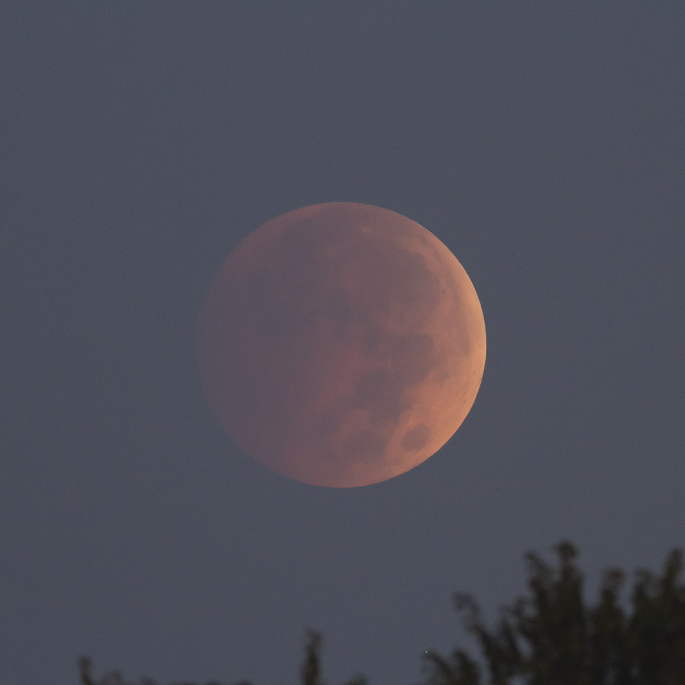
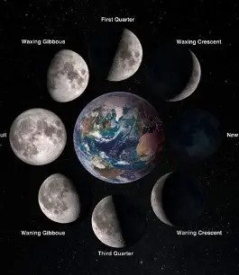

The Moon is about 238,855 miles away. That distance is about 30 Earth-sized planets away from earth. According to NASA The Moon is slowly moving away from Earth, about an inch further away each year. As the Moon orbits Earth, different parts are in sunlight or darkness at different times. The changing illumination is why, from our perspective, the Moon goes through phases. The Moon makes a complete orbit around Earth in 27 days, Because Earth is moving as well – rotating on its axis as it orbits the Sun – from our perspective, the Moon appears to orbit us every 29 days.
In Latin our Moon is called Luna. No one knew there where other moons until Galileo Galilei discovered four moons orbiting Jupiter in 1610. The Moon has no rings nor any other moons of its own.The Moon likely formed after a Mars-sized body collided with Earth several billion years ago. It took The Moon about 100 million years to form the lunar crust it is today. The structure of Earth Moon has a core, mantle, and crust. The cause of the Moons craters are caused by a steady rain of asteroids, meteoroids, and comets hitting The Moon.
